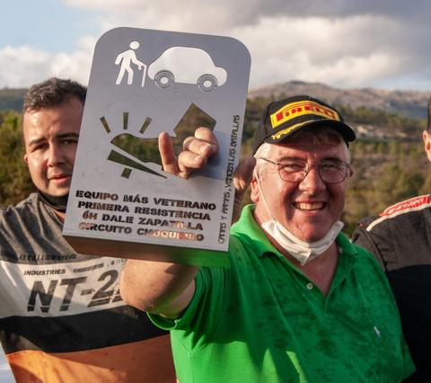
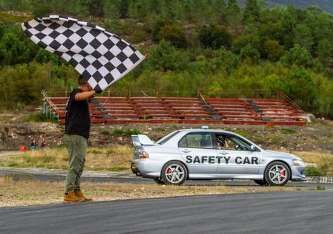
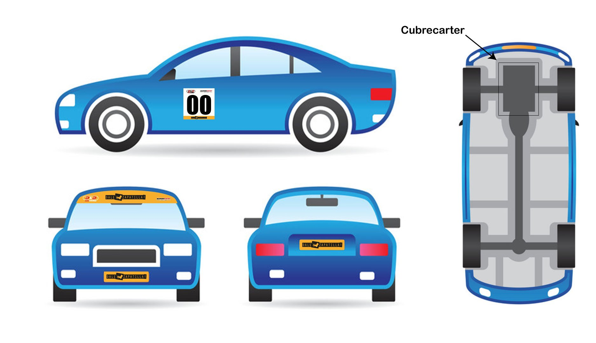
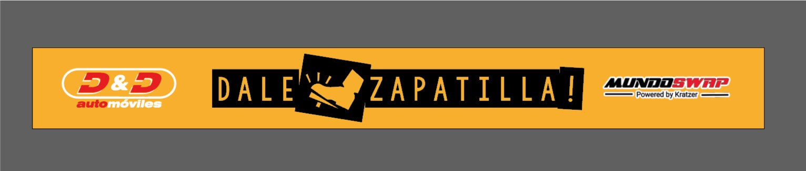

LAS REGLAS DEL JUEGO 2021
Adelantándonos al reglamento del 2021 (por si dudáis si mandar candidatura), os comentamos así por encima que será más o menos como en el 2020:🅾️Coches hasta 200cv gasolina o diesel (previa aprobación de la organización).
🅾️Obligamos a cuidar detalles de imagen, tonterías de menos de 30€ como que si vas sin faro tienes que llevar una malla metálica etc, nada grave ni caro.
🅾️Ni jaula ni nada pro obligatorio. Con un coche de serie, montáis un cubrecarter con 4 tornillos y con un extintor de 10€ ya está.
🅾️Obligatorio espacio de publicidad de la copa en el cristal delantero, espacio para dorsales en puertas de piloto y copi, así como un pequeño espacio tamaño folio para una pegatina lateral.
🅾️ Obligatorio cubrecarter sencillo, para evitar que una rajada de carter nos meta safety car a todos durante 2 horas para limpiar la pista.
🅾️ Los premios serán más o menos como los de este año, y las inscripciones mas o menos también, no esperamos que ninguna supere los 100€ (excepto las especiales de 12h con nocturna, que andará por ahí el tema).
🅾️ Son 7 pruebas, se pueden descartar 2.
🅾️En las que sean fuera de Galicia intentaremos cuadrar un transporte de unos 200€ para que los coches vayan en camión y paguemos entre los interesados el porte a medias.
🅾️Todas emitidas en directo como las del 2020, a ver si conseguimos una TV que las emita para que no solo sea internet.
Si conseguimos un patrocinador grande la idea es rebajar las inscripciones o los gastos de transporte a los equipos. ¡A ver qué sale!
No se si me olvido de algo más, pero vamos, que no difiere mucho del año pasado, y solo cambian detallitos por el bien de todos!
¿Quién puede participar? ¿Qué coches pueden participar?
Esta es una resistencia accesible para todos. Si tienes más de 16 años, y dos amigos, ya está. Buscad un coche gasolina, hasta 200cv que arranque y ande, y podréis anotaros. Hay coches de 200-300€ en venta por ahí. Conseguíis un juego de ruedas a más, un bidón de gasolina, y a rodar.
Nosotros solo os pedimos estos 9 requisitos:
- Un mínimo de 3 pilotos por equipo (máximo no hay)
- Un coche, o prototipo que tenga hasta 200cv
- Cuyo combustible sea GASOLINA (DIESEL previa aprobación de la organización y mínimo 4 pilotos)
- Que tengáis un extintor común accesible en el coche
- Que el coche cuente con el gancho para la grúa ya colocado
- Que incorpore al menos un silenciador de escape.
- Que salgáis a pista con un casco y con ganas de pasarlo bien
- Que el coche incorpore una plancha metálica que cubra el cárter del motor (cubrecárter de metal).
- Que el coche cumpla con requisitos estéticos básicos (NO golpes, NO rallazos importantes, NO defensas o capós descuadrados...)
No os pedimos coches con barras, arneses, ni nada muy pro. Con que no pierda aceites, los cintos funcionen, etc ya está.
Como en toda Dale Zapatilla! contaréis con
ambulancia (por lo que pueda pasar),
un buen número de comisarios de pista,
"director de carrera", y más mejoras.
Para
esta copa 2021, y con afán de mejorar la copa y la
imagen de TODOS nosotros y que más patrocinadores se
interesen en TODOS nosotros, hemos incorporado nuevos
requisitos:
- El cubrecárter de metal: ya eran
algunos circuitos los que nos lo exigían... ¡pero
realmente es un pequeño detalle que nos puede
amargar a todos!.
Todos a veces mordemos un piano. Y 6 horas dan para muuuchos pianos... Así que protegiendo el alojamiento de tantos litros de aceite velaremos por que no haya un safety car eterno porque un piloto rasque su cárter y manche la pista de aceite. Porque no queremos aceite en pista ¿verdad?
Con que pongas 4 tornillos rosca-chapa y un trocito de chapa metálica (un recorte de chatarra vale perfectamente) ya está. Solo pedimos que algo metálico cubra la parte baja del cárter de tu motor. - El cuidado de la imagen de los coches:
No esperamos que todos los coches estén
recién pintados, pero si que cumplan una imagen
aceptable, como se hace en cualquier competición
seria. ¿No te gustaría que un patrocinador no se
interese en tu coche porque la copa parece de coches
de desguace, verdad? Pues por eso vamos a cuidar
todos juntos la imagen.
Coches sin golpes, sin defensas colgantes, con los rallazos disimulados con un pincelito, con las llantas pintadas en el mismo color... etc.
La organización se encargará de ir cribando los coches y exigiros mejorar ciertos aspectos. Pero partimos de la base de que todos nos tomamos bien en serio que nuestro coche esté elegante para una cita tan especial ante miles de personas, ¿no?
No queremos que te gastes miles de euros en pintar el coche de nuevo, porque con un poco de spray de los chinos y una baraja de cartas puedes pasar de unas llantas negras feas y oxidadas a unas llantas blancas o plateadas que harán que tu coche luzca mejor.
No nos importa que quites el faro para hacer una toma de aire fresca para la admisión, pero deberás añadir una rejilla metálica para que el coche no esté tuerto. Son 5 euros de diferencia, pero es la manera de que el fotógrafo busque tu coche para fotografiar ese coche tan molón :P.
Y como en anteriores ediciones, es obligatorio un extintor, accesible en el interior del coche.. El más cutre cuesta 15 Euros en el Alcampo o en Amazon, y nos puede ahorrar desgracias. Y es obligatorio que el sistema de escape cuente con al menos un silenciador, ya que es incómodo para todos escuchar 30 líneas de escape a la vez durante 6 horas.
De nuevo os recomendamos un martillo cortacintos-rompecristales como este , y que incorporéis las máximas protecciones posibles al piloto.
El seguro nos obliga a que el coche esté "completo" digamos. Podéis cambiar cristales por policarbonato, pero no quitar puertas ni cristales.
En cuanto al seguro de piloto, es un seguro muy básico. Si tenéis ya un seguro anual os descontaremos 10€ de vuestra inscripción de piloto. Y de hecho si vais a ir a varias carreras, os interesa tener un seguro de piloto propio (y os sale más económico a la larga). Os recomendamos ESTE.
¿Qué se gasta (+ o -) corriendo 6h?
Tienes que contar con: tener un coche, unos 50-80 litros de gasolina y la inscripción.
- Si ya tienes coche, perfecto. Si necesitas uno, divide ese gasto entre los integrantes del equipo, y ¡nuevo juguete para estas resistencias!
- Tema gasolina, depende de tu motor, te podemos decir desde la experiencia, que no creo que gastéis más de 80 litros de gasolina con un motor grande. Si tienes un 1.5l o algo así, con una garrafa de 50 litros corres toda la resistencia. Hay gasolinera cerca (10 min) por si os quedáis cortos.
- Por las ruedas depende muchísimo... desde la temperatura, si llueve o no, cómo conduzcas, el tipo de goma que lleves... Hay equipos que en seco, con unos semis nuevos vienen rodando, corren y se vuelven para casa dentro del desgaste legal. Luego hay ruedas chinas que se desintegran, hay pinchazos, y cosas que pueden resultar peor. Nosotros recomendamos llevar otro juego de gomas, por lo que pueda pasar.
- En cuanto a repuestos y demás, es una lotería. Si el coche está decente de mantenimientos (aceite, frenos), no deberíais necesitar nada más. Todo lo que podáis llevar a más de recambios y repuestos, mejor.
- La inscripción es fácil: pagas por equipo 80€ ahora para inscribirte, y el día de la resistencia 80€ por piloto.
Recomendaciones varias:
Id concienciados de que os pasarán cosas. Son muchas horas, y todo es posible. Nosotros, bajo nuestra experiencia os recomendamos:
- A nivel seguridad: intentad llevar todo lo posible, pero como básico un martillo cortacintos. Mono, hans y jaula serán vuestros aliados de seguridad, por si pudiéseis incorporarlos.
- A nivel herramientas, con una caja de herramientas completita, y un martillo, será más que suficiente
- A nivel imprevistos, os recomendamos llevar bridas, nural (para soldar en frio el carter, por ejemplo), barrita arreglatodo (ideal para reparar radiadores), aceite, agua, líquido de dirección y frenos; cinta autovulcanizante (para reparar un manguito), y lo que se os ocurra.
Tened en cuenta que puede pasar de todo, un silembloc que te abandona, un piano que coges bestia y rajas el carter... ¡de todo!. Pero en 6h puedes reparar todo el coche si hace falta. ¡Y acabar la carrera es lo importante!
En cuanto al repostaje, cada uno tiene su técnica. Nosotros somos partidarios de un embudo metálico, que clavas en tu coches en la parada, y le viertes gasolina encima. Si es anchote, mejor.
Cada equipo se encarga de su gasolina. Tenedla a la sombra importante. La lleváis a repostaje, repostáis y de vuelta para donde queráis
También os recomendamos luces de freno e intermitentes como básico.
Dos podiums, para igualar potencias
Una sola resistencia, un mismo grupo, pero el doble de posibilidades:
Podium General:
- 1er premio: 200€ y un trofeo para el equipo, y medalla para cada participante.
- 2º premio: 100€ y un trofeo para el equipo, y medalla para cada participante.
- 3er premio: 50€ y un trofeo para el equipo, y medalla para cada participante.
En el podium tendréis champán (sin alcohol), para que podáis mojaros y liarla un poco.
Podium "menos competitivos":
Queremos darle una oportunidad a participantes con poca potencia, así que entre los inscritos determinaremos aquellos con menos posibilidades, y los segmentaremos en este podium (bajo el criterio de la organización, decidiremos aquellos coches "menos competitivos", en base a potencia, peso, relación de transmisión, etc etc)
- 1er premio: 100€ y un trofeo para el equipo, y medalla para cada participante.
- 2º premio: 50€ y un trofeo para el equipo, y medalla para cada participante.
- 3er premio: 20€ y un trofeo para el equipo, y medalla para cada participante.
En el podium tendréis champán (sin alcohol), para que podáis mojaros y liarla un poco.
TODOS LOS PARTICIPANTES, sólo por participar, SE LLEVARÁN UNA MEDALLA GRABADA y personalizada con el nombre de tu equipo y las vueltas que habéis dado al circuito para que recordéis siempre esta resistencia!

Se entregarán los siguientes trofeos adicionales:
- Ultimo equipo: el último equipo en cruzar la meta.
- Coche menos potente (en el momento de la prueba)
- Coche menos preparado (en caso de haber varios, irá a criterio de la organización)
- Equipo más viejo (se hará una media de las edades de los pilotos de equipo)
- Equipo más jóven (se hará una media de las edades de los pilotos de equipo)
- Coche más antiguo (lo veremos por documentación)
- Coche más nuevo(lo veremos por documentación)
- Equipo más lejano (aquellos que vengan desde más lejos hasta Burgos)
- Vuelta rápida
- Y algunos trofeos más...
Y gracias a nuestro patrocinador MundoSwap, varios equipos se llevarán premios extra para mejorar sus coches: unos latiguillos metálicos, aceites...¡Y habrá más sorpresas!
Las medallas, los trofeos y los premios
Más de 500€ en metálico, champán, trofeos y medallas grabadas, y mucho más.
El cambio de sentido
En el ecuador de la resistencia (cuando el crono marque 3:00:00h), se mostrará una bandera rosa en la línea de meta. A partir de ese momento la vuelta se convierte en nula, y todos los pilotos deberán dirigirse a la doble curva que forma la asistencia, en la parte alta del circuito.
Allí se agruparán los coches, y cuando comprobemos que todos ellos están preparados para el cambio de sentido, saldrán detrás del Safety Car para una nueva salida lanzada, y que comiencen las restantes 3h de resistencia, con el circuito en sentido inverso.

El cambio de sentido se hace casi sin parar. Habrá una vuelta que se convierte en nula para todos para hacer el cambio de una manera segura.
Podréis cambiar neumáticos, o pilotos después del cambio de sentido, o unas vueltas antes, pero intentaremos que el pit esté despejado en esa mitad de resistencia, para que nadie tenga la ventaja de estar cambiando ruedas en la vuelta nula, ya que el crono está parado. Si por casualidad algún equipo se encuentra en boxes en ese momento, será penalizado, para ajustar esos minutos nulos.
La Salida "Le Mans"
En la línea de meta del circuito se situarán los coches de los pilotos, con un ángulo de unos 45 grados con la longitudinal de la recta.
Hemos considerado más seguro que el piloto (y copiloto si se desea) se encuentren ya dentro del coche antes de la salida, con sus arneses, casco, y todo perfectamente asegurado y comprobado. Será otro integrante del equipo aquel que tenga que correr desde el otro lado de la pista, para darle al piloto la llave del coche para que éste lo arranque. En caso de coche con cortacorriente, será el cortacorriente lo que tendrá que acercarle el otro miembro del equipo. Y si no fuese posible, pues lo simularemos aunque sea con un boli, para todo hay soluciones :)
La asistencia del equipo
El Circuito FK1 la linea de pit está perfectamente delimitada. Los boxes abiertos se compartirán entre varios equipos, y los más rápidos en inscribirse el día de la carrera disfrutarán de éstos.
El repostaje se hará en una zona designada, justo antes de la salida del pit.
Os recordamos que tanto el número de cambios de piloto, como el número de neumáticos, como el volumen de gasolina es completamente ILIMITADO. No queremos restringir nada, para que cada equipo lo haga como mejor le parezca.
En cuanto a los cambios de piloto, lo único que SI es obligatorio es que MINIMO cada piloto conduzca UNA VEZ, para evitar que en un equipo corran dos pilotos, cuando tienen que ser tres.
Adicionalmente os pedimos compañerismo en la asistencia, ya que no hay demasiado espacio y tendremos que coordinarnos bien entre equipos. Intentaremos no obstaculizar con coches o herramienta fuera de vuestro espacio, que con las prisas y la emoción a veces nos liamos :)
ATENCIÓN: En asistencia y en el pit line no se podrá circular a más de 10Km/h, o patinar. Cualquier piloto que levante polvo por derrape, circule rápido o se pase en cualquier aspecto, tendrá una penalización.
El cronometraje de la jornada
Como siempre, decidimos invertir en un buen cronometraje, con una empresa que viene desde País Vasco a cronometrar las resistencias.
El cronometraje se hará mediante transponders de última generación TimingSense, especialmente diseñados para cronometrar tiempos y se caracterizan por haber desarrollado una tecnología propia tan fiable que las incidencias de media se acercan al 0%.
El cronometrista os entregará los transponders, y os ayudará a colocarlos en vuestros coches. Comprobará que todo funcione correctamente y garantizará que el cronometraje sea 100% fiable a las milésimas de segundo.
Todos los equipos son responsables de llevar el transponder colocado correctamente. Si decidíis quitar el transponder por alguna razón, deberéis ponerlo nuevamente para que vuestras vueltas sigan contando.
En el bar de la parte alta del circuito tendréis una pantalla grande para comprobar los tiempos en directo, la posición en la resistencia, etc. Además podéis ver en esta misma página web los tiempos en directo cómodamente desde cualquier lugar.
La organización, el safety car, banderas...
Habrá varios integrantes de la organización repartidos por el circuito:
- Un "director de carrera" + un apoyo de dirección estará en la zona destinada a repostar, supervisando la resistencia, que se cumplan las normas en la asistencia, y atendiendo vuestras consultas, si las hubiera. Si tenéis cualquier problema, él está para ayudaros.
- El otro "director de carrera" estará solucionando problemas por ahí, haciendo cumplir las penalizaciones, revisando un incidente entre dos equipos....
- Habrá otros 7 integrantes de la organización atendiendo a las banderas, el control de acceso al circuito, etc.
El Safety Car saldrá solamente cuando se necesite limpiar la pista en algún lugar, haya un coche que no pueda moverse por sus propios medios, o cualquier momento que considere el "director de carrera".
Las banderas avisarán a pilotos de peligros en las peores curvas, del cambio de sentido a las 3h de resistencia, o bien la bandera a cuadros a final de las 6h de resistencia.
Ambulancia en el circuito
Como siempre, tendremos más tranquilidad con una ambulancia en el circuito por lo que pudiese pasar. Además tendréis más banderas, dirección de carrera, etc para minimizar los incidentes en pista. ¡Un gran cambio bueno para todos!
"Reglamento" de la resistencia
Lo primero, lo más básico, y lo que todos tenemos que tener claro: esto es una copa no profesional. Somos 4 aficionados haciendo algo chulo para 4 aficionados. No hay exigencias, no hay malos rollos, no hay restricciones... Solo buen rollo, y ganas de pasarlo bien. Tratamos de hacer algo serio y profesional, pero no existe un reglamento. Solo unas directrices que os explicamos, y que vamos modificando sobre la marcha (en algunos casos), con afán de pasarlo bien, hacerlo accesible, seguro, y justo.
Pero insistimos. Todo está en manos de la organización, todo puede ser modificado, y se hace todo bajo nuestro criterio. Esperamos que este punto quede bien claro, y que nadie se ofenda.
Además de todo lo explicado en las anteriores líneas, os daremos un briefing explicando lo básico.
El resumen es que vamos a pasarlo bien, no queremos que nadie se haga daño, no queremos que ningún coche sufra golpes, ni queremos líos en la jornada.
Como básico, si llevas un coche detrás que rueda claramente más rápido que tu, y sabes que está por delante tuya en la clasificación, te echas a un lado, y dejas pasar. Si vais en la misma vuelta, le tapas huecos, claro.
Nuestras jornadas son libres de alcohol, tabaco y otros
No estará permitido fumar en la asistencia, pit line o alrededores. Aquellos que deseen fumar, deberán alejarse hasta el parking, por la seguridad (hay gasolinas y otros líquidos) y la salud de todos.
No estará permitido el consumo de alcohol entre los pilotos ni la asistencia, intentamos hacer una jornada DEPORTIVA, y consideramos que tenemos que estar a tope para rendir al 100% en la resistencia. Puedes tomar alcohol o lo que sea cualquier otro día, así que te pedimos tasa 0,0 en todo.
No tenemos un alcoholímetro, pero confiamos en vuestra colaboración. Aquellos que sobrepasen esta norma serán penalizados o expulsados de pista. Lo avisamos de antemano, por favor queremos una jornada sana, gracias.
Una última advertencia...
Para esto nos ponemos serios: esto son resistencias que intentaremos serán lo más profesionales posible.
Si tu idea es ir con un coche al que no le tienes aprecio, y que muera en la propia resistencia, esto no es para tí. No permitiremos que ningún participante estropee la resistencia a ningún equipo. Si tú no le tienes aprecio a tu coche, respetamos que quieras correr con él, y confiamos en que te comportes de una manera profesional, sin poner en peligro los coches de los demás participantes.
Se reserva el derecho a plaza en demás resistencias en base al comportamiento de los equipos.
No nos va a temblar la mano en sancionar o en echar a ningún equipo que se crea que esto es un derby destruction. Venimos a correr, no a desmadrar.
Todos queremos divertirnos, pero queremos divertirnos sin sufrir incidentes (dentro de lo que se pueda). Lucharemos juntos por detectar participantes con un comportamiento inadecuado. Si ves cualquier incidente, avisa al "director de carrera" con lo sucedido para que podamos sancionar (previa investigación) al causante.
Gracias a todos por entender este párrafo tan importante, y ¡gas!
La retransmisión en directo
Por apuesta personal de la organización, y apoyados en El Garaje de Hache y sus amigos, retransmitimos y retransmitiremos nuestras resistencias en directo.
Al ser una retransmisión no profesional y tras el éxito de otras ediciones, dejamos al equipo que gestiona esta parte que lo haga tan bien como lo hacen :)
Nos han prometido que serán lo más imparciales posibles. Ayudémosle con la información que nos pide, fotos de los coches, historia de los pilotos, etc. Así mejoraremos entre todos la transmisión. No obstante como hemos podido ver en las anteriores transmisiones, para ser algo no profesional, ha sido fantástico el trabajo tanto de Miraveo (en la realización), como de Hache, Nacho y más amigos, a los que les damos las gracias desde aquí.
Más de 200.000 personas han visto nuestra última resistencia... ¿Llegaremos al medio millón en nuestra próxima edición?
Publicidad DaleZapatilla!
En esta edición queremos seguir con nuestro cuidado de la imagen de nuestros participantes. Para ello incorporamos de manera obligatoria el banner situado en luna delantera, y los dorsales situados en los laterales.

El banner de la luna delantera y el dorsal en las puertas acompañará los coches de todos nuestros inscritos, con afán de mantener una homogeneidad en las fotos, vídeos, y en la apariencia en general de los coches, como bien se viene haciendo en otras copas o eventos.

Además de esta manera agradeceremos a DyD Automóviles su incondicional apoyo, y a MundoSwap los premios extra que ofrece a los participantes. Es un pequeño detalle, pero ¡hay que ayudar a los que nos ayudan!
Para aquellos coches que traigan matrículas de calle será también obligatorio pegar los "tapamatrículas" que se incluyen en la caja de inscripción.
Las medidas serán de 20cm de alto para el parasol (por todo el ancho del parabrisas); los dorsales de 45x15, y los "tapamatrículas" (obligatorios para aquellos que traigan la matrícula original del vehículo) miden lo que mide una matrícula.